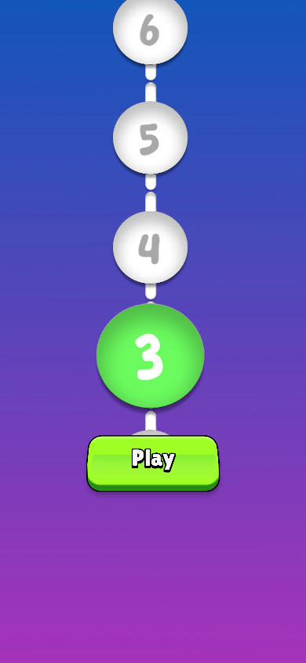
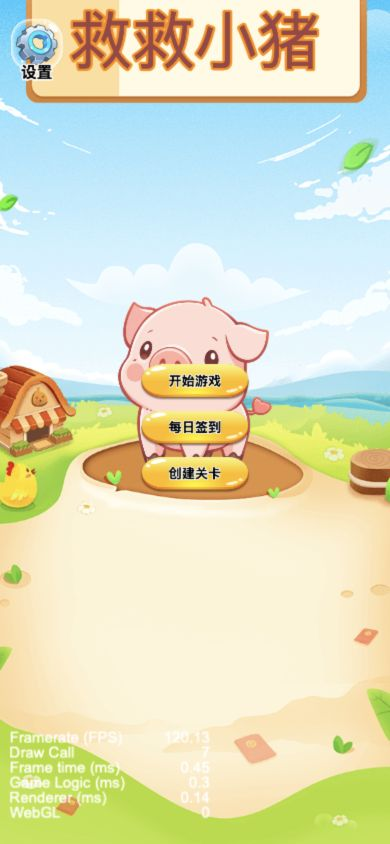
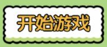
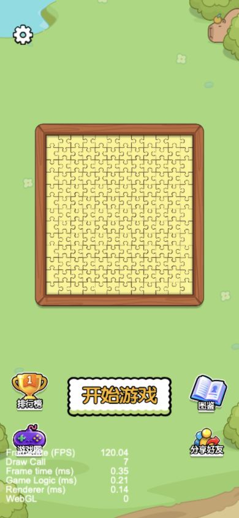

沿用已有B类原Prefab辅助运行截图，非完整原游戏正常流程。裁切未修色、未重绘，背景未抠除。
原始素材（等比展示）
390宽页面原像素裁切
厚底、面侧层次清楚；粗黑边与绿色不沿用。文字已烘焙，不直接拉伸。

原始素材（等比展示）
390宽页面原像素裁切
金色方向最接近：白色高光、饱满圆角和橙色薄底。156×72，切片边界为0，不直接放大采用。按压配置0.1秒／1.2倍，不照搬幅度。

原始素材（等比展示）
390宽页面原像素裁切

纸边招牌、烘焙文字；参考主文案突出，不采用纸边风格。源码Util.btnAnimation每1秒在1和1.1间往返，完整周期2秒。

Bus Mania通用空按钮与猪了个猪通用黄按钮；救救小猪的btn4同样是空底板。只作结构／高光参考，不代表已验证原项目抽奖页面使用了它们。
以救救小猪的饱满金面为形态参考，保留航海主题：减少当前底边多道叠线，增强上沿及两端高光，收紧主副文案间距；抽奖价格旁增加独立锚币图标。应新制高清空底板，不直接放大btn4，也不使用烘焙文字图片。
开始／继续：建议每4秒一次轻微的视觉层缩放（1→1.02→1），按下下沉、松手短回弹。抽奖：进入奖池时扫光一次，常态静止；不做常驻跳动。根点击区不变，禁用／确认／遮挡时停止。以上动效尚未实施，弹窗拖尾继续完全静态。
主页船已按本次要求调整：摆角±0.8°→±1.2°，上下幅度增加25%，速度×1.15（周期约5秒→4.35秒），不影响收藏预览或游戏规则。